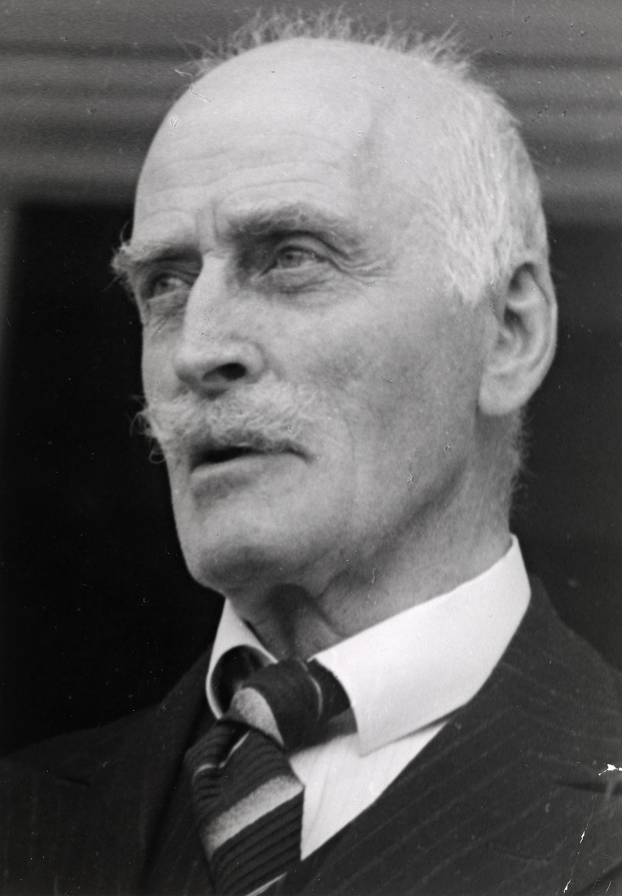

Mi-am propus să ofer în fiecare zi conținut nou: o recomandare de carte, de melodie, o biografie de autor, un citat, o glumă... Astăzi este rîndul:

Laureat al Premiului Nobel pentru literatură în 1920, Knut Hamsun (1859 — 1952) a fost un scriitor norvegian caracterizat drept neo-romantic și neo-realist. În lucrările sale, sînt tratate probleme profunde ale existenței, printr-o literatură psihologică și monolog interior care evidențiază fluxul de conștiință, plasîndu-l în compania unor scriitori precum Thomas Mann, Franz Kafka, Hermann Hesse, Ernest Hemingway și alții.În romanul Foamea, apărut în 1890, un scriitor pauper caută cu disperare diverse comisioane, proiecte jurnalistice sau de orice alt tip în care să se implice, pentru a aduna un ban. Întreaga carte se concentrează, pe de o parte, pe mizeria în care trăiește personajul (nenumit) și revolta sa interioară de a nu se lăsa umilit, izbucnirile de orgoliu și demnitate, care-l aruncă în ridicol în multe situații.
Notă personală: Romanul Foamea este singura lucrare pe care am citit-o pînă astăzi în cazul căreia de minim 3 ori pe fiecare ședință de lectură îmi schimbam sentimentele asupra personajului principal, de la ură, revoltă puternică, determinîndu-mă aproape să vreau să închid cartea instantaneu, la emoție și compătimire pînă spre lacrimi.